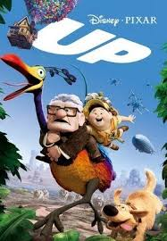

Año de publicacion: 2009
Producto de pixart
simplemente perfecta, es la película que mas me gusta, ya que cuenta la historia de Fredricksen una persona que vive en medio de una construcción y no quieren que le destruyan la casa de toda su vida, con donde vivió su vida con Ellie y quiere cumplir el sueño que ella nunca pudo, el crea una casa voladora con globos (de ahí el nombre Up un viaje de altura) y acompañado de Russel Ellos van a Sudamérica, y allí se encuentran con kevin y Dug y desde allí empieza una nueva aventura,su enemigo Charles Muntz quiere atrapar a kevin para demostrar que no es un fraude, ademas el soundtrack de los 80 le queda mucho, la mejor parte para mi es cuando ve el libro de sus aventuras y en "Cosas que voy Hacer en el Futuro" ve las imágenes de el y su esposa Ellie esa parte me hizo llorar, obviamente también con el principio, Spoiler Alert} literalmente le doy un 10/10. Perfecta esta película, si no la vieron se lasa recomiendo, en fin mucho texto